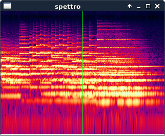
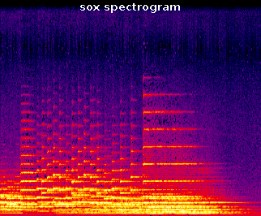

SPETTRO
Show a scrolling spectrogram of music as it plays.

spettro displaying Delia Derbyshire's 20-second theme "Chronicle"

A linear spectrogram of the same music, courtesy of sox spectrogram
|
Most spectrograms have a linear frequency axis, which is no good for music
because the top half of the graphic represents the top octave of the sound,
the octave below occupies the next quarter of the screen,
the following one the next eighth and so on,
leaving most of the musical information crushed into the bottom few rows.
Spettro's logarithmic frequency axis gives makes each
octave the same height, much like a conventional musical score
(and closer to the response of the cochlea in our ears),
revealing a greater amount of musically-interesting detail to our eyes.
The playing position is the green line in the middle of the screen,
so you can see musical events in arrival, hear them,
and contemplate them as they recede to the left.
You can see/hear it playing this short piece
on YouTube.
Where to get it
Spettro is under development on Github, is known to work when compiled on GNU/Linux, and should be
portable to Windows, Mac, Android, iOS and Tizen.
How to use it
At the moment, you have to start spettro from the command line prompt,
telling it the name of the audio file that it should play and display.
You then press buttons on the keyboard to make everything else happen.
Playing the music
- Space
- The space bar makes spettro play the file, scrolling the graphic
to the left in time with the audio. Press it again and it pauses,
press it again and it continues playing. When it gets to the end
of the piece, it stops automatically; press Space again and it
starts playing from the beginning.
If your keyboard has Play/Pause and Stop media buttons,
these may also work.
The -p or --autoplay command-line flag makes it start playing immediately, and
the -e or --exit flag makes it quit when it reaches the end of the audio file,
so spettro -peMoving around
- ← →
- Left Arrow skips back one tenth of a screenful in the audio file.
If a Shift key is held down, it skips back a whole screenful, while
holding down Ctrl scrolls by one pixel; with both, by one second.
Right Arrow works similarly but skips forward in time
instead of back.
- Home End
- The Home key moves you to the start of the piece,
the End key to the end.
The |<< and >>| media keys may also do this.
- ↑ ↓
- The Up Arrow key moves you up the frequency axis by a tenth of the
height of the spectrogram; similarly, Down Arrow pans down
to reveal more of the lower frequencies.
With Shift, the view pans by the height of the graphic,
with Ctrl, by one pixel.
- PgUp PgDn
- Page Up and Page Down move up/down the frequency axis
by the height of the graphic
(the same as Shift-UpArrow and Shift-DownArrow).
Zooming in and out
- x X
- Pressing a lower case 'x' zooms out by a factor of two on the time
axis, so that twice as much of the sound becomes visible, while
upper case 'X' zooms in, enlarging the central half of the display
to the width of the graph.
If you zoom in enough while playing the audio, spettro will eventually be
unable to calculate fast enough to keep the screen properly updated.
- y Y
- Similarly, 'y' zooms out on the frequency axis,
showing twice the frequency range as before and compressing
the graphic in the vertical direction,
and 'Y' zooms in by a factor of
two so that what was the central half of the graphic now fills the
whole height. If Ctrl is held down, it zooms out/in by two pixels,
revealing or hiding one more row of pixels at the top and at the bottom.
The maximum permitted zoom out is when the frequency at the top of
the graph is 9 x 10^307 times the one at the bottom
(half the value of the largest 64-bit floating-point number.)
- Ctrl-Plus Ctrl-Minus-
- With Ctrl held, Plus zooms in on both axes, like X and Y
at the same time, and Minus zooms out in both directions.
Setting zoom/pan on the command line
The command-line options to set the initial position and zoom are:
- -t x / --start x
- Sets the initial playing position to x, which can be either
a number of seconds into the piece, minutes:seconds
or hours:minutes:seconds.
- -P n / --ppsec n
- The pixels-per-second value determines the horizontal zoom.
Specifically, it says how many pixels of screen each second of audio
occupies. By default it starts at 25 pixels per second;
higher values stretch the image wider, and lower values display a
longer portion of the song.
- -n f / --min-freq f
- Sets the frequency represented by the bottom pixel row,
by default 27.5Hz (A0).
- -x f / --max-freq f
- Sets the frequency represented by the top pixel row,
by default 14080Hz (A9).
Colors, contrast and brightness
- m
- Cycles through the alternate color maps: the default colored heat map
running from blue through red and yellow to white,
grayscale (white on black) and for printing (grayscale, black on white).
The -mh, -mg and -mp, or
--heat, --gray and --print
command-line options select a color scheme.
- c C
- The 'c' and 'C' keys adjust the contrast by changing
the range of loudnesses that the color scale covers.
'C' increases the dynamic range by 6dB
(by 1dB if Ctrl is held),
brightening the darker areas to reveal detail;
'c' decreases the dynamic range by 6dB
(by 1dB if Ctrl is held),
darkening the graphic to hide background noise and
make the main sonic events stand out.
By default, the dynamic range starts at 96dB and the minimum it goes
down to is 1 decibel, which shows only the very loudest areas.
The -d r or --dyn-range r
command line option sets the initial dynamic range to
r decibels.
- b B
- The 'b' and 'B' keys adjust the brightness by changing
the volume represented by the brightest pixel in the color map.
b makes the graphic 10% darker, and B makes it 10% brighter.
When spettro encounters a pixel louder than the current maximum,
it automatically lowers the brightness so that the loudest pixel
is displayed at the brightest color (usually white).
When this happens, all newly-painted pixel columns will be dimmer than the
already-displayed ones, causing a color discontinuity when the new,
louder pixels enter the displayed area.
(It used to repaint previously-painted lines when this happens,
but that turned out to be too slow.)
To repaint the whole display at the new brightness, press Ctrl-L.
The -M logmax flag lets you start with the brightest
color representing a pixel energy of logmax decibels.
Values above 0 make it start out darker, and
values below 0 make it start out brighter.
The current value of logmax can be found out by pressing 'p'
and looking at spettro's console output.
Image size and full-screen mode
Spettro doesn't yet support changing the image's size while it is running
(in fact, you can't "resize" its window with the mouse); instead, you can
set the window's size with the command-line options:
- -w x / --width x
- sets the window's width to x pixels.
The default is 640 and the maximum, with SDL2, seems to be 4090.
- -h y / --height y
- sets the window's height to y pixels.
The default is 480 and the maximum, with SDL2, seems to be 4064.
Fullscreen mode fills the whole screen with the picture but it does not
change the size of the underlying image; it scales a picture of the above size
to the size of the screen (so the pixels and writing appear bigger).
- Ctrl-F
- This key switches between windowed and full-screen modes.
- -F
- The -F or --fullscreen command-line flag
makes it start up in full-screen mode.
To obtain the highest-definition spectrogram that your screen is capable
of displaying, you need to set the size of the image to the same size as
your screen and go into fullscreen mode, for example:
spettro -w 1024 -h 768 -F whatever.wav
If your monitor or video card does not support the width and height you
specify, you may get a blank screen and have to reset the computer.
The xrandr command will tell you your screen's native dimensions.
Frequency/time resolution
Spettro works by taking short samples of the audio file, centered on different
moments in the audio file, and converting each sample to a column of pixels
whose colors represent the energy in the sound at each frequency.
By default, the FFT frequency is 5Hz, which takes a fifth of a second sample
for each column and enables it to distinguish frequencies that are 5Hz apart
and to resolve about five distinct musical events per second.
A higher FFT frequency (using shorter samples) improves the graph's
definition in the time direction but loses focus in the frequency direction,
while a lower FFT frequency (using a longer sample for each column)
improves detail in the frequency direction,
but smears it in the time direction.
- f F
- These keys change the size of the audio sample used for each column.
'f' halves it and 'F' doubles it.
The -f freq or --fft-freq freq
command-line option sets the FFT frequency to start with.
Window functions
The other factor affecting the fine-grain quality of the image is the choice of
window function used to smooth the edges of each sample before it is transformed
into a spectrum.
Each window trades differently between frequency selectiveness and
background noise, with the following list being approximately from
the cleanest but least selective to the most selective but most noisy.
The five window functions can be selected by holding Ctrl down and
pressing a letter, or with command line flags.
- Ctrl-K / -WK / --kaiser
- Kaiser window, the default
- Ctrl-D / -WD / --dolph
- Dolph window
- Ctrl-N / -WN / --nuttall
- Nuttall window
- Ctrl-B / -WB / --blackman
- Blackman window
- Ctrl-H / -WH / --hann
- Hann window
- w / W
- The 'w' and 'W' keys cycle forward/backwards
through the window functions in the order shown above.
For more info on the different window functions' peculiarities and merits,
see Window_function
on Wikipedia or experiment with spettro and see for yourself!
Frequency scales and overlays
Spettro can add a frequency scale to the left and right edges of the picture,
and can overlay it with various sets of horizontal lines to show the positions
of the 88 piano keys, the six open strings of a classical guitar, and
the staff lines of a conventional score.
- a
- The 'a' key adds a frequency axis on the left side of the graph,
and the positions of the conventional scoring notes, from A0 to G9,
on the right. Pressing 'a' again makes them go away.
The -a or --freq-axis command-line flag
makes it start up showing the frequency scales.
- A
- The 'A' key labels the time in seconds along the bottom of the
graph and shows a status line along the top with the values of all
settings that determine what the graph looks like.
The -A or --time-axis command-line flag
makes it start up showing these.
- k
- The 'k' key
overlays the spectrogram with 88 horizontal lines,
some black, some white, showing the frequencies of the keys
of a grand piano from A0(27.5Hz) to C7(4186Hz).
Pressing 'k' again makes the white keys green instead of white,
and pressing it again removes the overlay.
The -k or --piano command-line flag
makes it start up with the piano key lines visible.
- g G
- The 'g' key overlays the frequencies of the six open strings
of a classical guitar, centered on:
E2(82.4Hz) A2(110Hz) D3(146.8Hz) G3(196.0Hz) B3(246.9Hz) E4 (329.6Hz)
g makes the lines one pixel thick, G three pixels thick.
Pressing 'g' or 'G' again makes the guitar lines
black instead of white and pressing them again removes them.
The -g or --guitar command-line flag also
makes it show the guitar strings' lines.
- s S
- The 's' key overlays two five-line staves
like those of a conventional musical score.
From top to bottom, the staff lines are centered on:
F5(698.5Hz) D5(587.3Hz) B4(493.9Hz) G4(392.0Hz) E4(329.6Hz)
A3(220.0Hz) F3(174.6Hz) D3(146.8Hz) B2(123.5Hz) G2(98.0Hz)
's' makes the lines one pixel thick,
'S' three pixels thick.
Pressing 's' or 'S' again makes the staff lines
black instead of white and pressing them again removes them.
The -s or --score command-line flag also makes
it start up with staff lines.
Turning the staff lines on turns the guitar lines off and vice versa
(because they overlap)
but you can display the piano keys at the same time as either of them,
to identify notes above the top or below the bottom staff lines,
or to see the fretted positions between the open guitar strings.
There is, as yet, no command line flag to make the overlays green or black
instead of white.
Bar lines and beat lines
To help you pick out the rhythm, spettro can overlay evenly-spaced vertical
lines onto the graphic to show where each bar of the music begins and ends.
To do this, you mark two pixel columns to say where some bar starts and ends,
and spettro will add bar lines evenly spaced throughout the piece.
To get a useful result, precise positioning of the bar lines is crucial.
There are three ways to set the position of the bar line markers:
- You can position the graphic so that the green line is at the start of a
bar, press 'l', move it to the end of the bar and press 'r'.
For more precise positioning, zoom in on the time axis with 'X',
hold down the Ctrl key and use the left and right arrow keys to
shift the graphic by one pixel at a time.
- If you hold down the Ctrl key, you can position the left bar line by
putting the mouse pointer at the start of a bar and clicking the left
mouse button. Similarly you can position the right bar line with
the right mouse button.
- The -l and -r (or --left and --right)
command-line flags set the time of the left and right bar lines,
either as a number of seconds fromthe start of the piece or as
minutes:seconds or
hours:minutes:seconds.
If you set the left bar line marker to the right of the right one,
it will still work.
Once you have both bar line markers set, you can make it show lines dividing
each bar into from 2 to 12 beats by pressing the number keys
from 2 to 9 or the function keys F2 to F12.
The 1 and F1 keys remove the beat lines, leaving just the bars
and the 0 (zero) key removes the bar lines.
The -b n (or --beats n) option sets the initial number
of beats per bar.
Quit
- Esc Ctrl-C Q Ctrl-Q
- These key combinations all make spettro
quit-exit-close-terminate-finish-stop.
Redraw
- Ctrl-L / Ctrl-R
- Ctrl-L redraws the display from the cache of results already
computed, while Ctrl-R recalculates every column from the audio.
These can be useful if the display becomes garbled for some reason.
Diagnostics
- t
- Prints the current playing time on the console.
- p
- Prints the current user-interface settings on the console.
Soft volume control
Spettro has a software volume control, which multiplies the sound by some
value before sending it to the audio-playing system, usually used to
increase the volume above 100%. There is no upper limit to the volume you
can increase it to, but it reduces the volume automatically if it would
have made the audio output clip.
- + -
- Plus and Minus are spettro's volume-up and volume-down keys.
If your keyboard has volume-up and volume-down media buttons,
they may also work.
The -v N command-line flag sets the initial softvolume
level to N, where values above 1.0 are louder than 100% and values
lower than 1.0 are softer than usual.
Dumping the screen image to a file
- o
- The 'o' key outputs a copy of the current screen into a PNG file
whose name includes the command-line options necessary to recreate
the same view that is being saved.
The -o file.png (or --output) command-line option, instead, makes spettro
start up, calculate the spectrogram, dump the image into a named file and
quit without playing it or giving you the chance to press any buttons.
Unlike the 'o' key, -o's output doesn't include the green line.
With these and, for example, -w 4000 -h 1000,
you can generate higher-definition images than your screen is capable of
displaying.
Other command-line options
- -j n / --jobs n
- Sets the number of FFT calculation threads
(default: the same as the number of CPUs.)
- -R n / --fps n
- Scrolls the graphic, at maximum, n times per second,
instead of the usual 25 frames per second.
- --version
- Shows which version of spettro you are using, and with which
graphic toolkit and audio libraries it was compiled.
- --help
- Shows a summary of all keys and option flags.
Martin Guy <martinwguy@gmail.com>, August 2018 - May 2019.